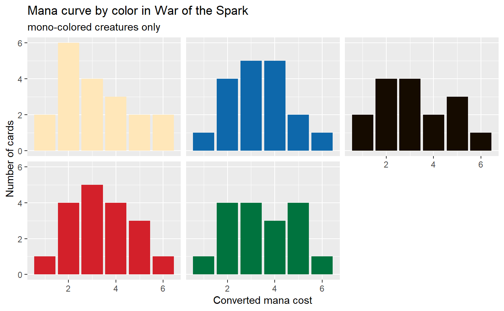

scryr provides R functions to access Scryfall’s APIs for catalogs, sets, and card search.
Install scryr from Github with devtools
Usage
scry_catalog()
Scryfall catalogs contain each unique value of the catalogs content, returned as a vector of strings. So, if you wanted every enchantment subtype:
## [1] "Aura" "Cartouche" "Curse" "Saga" "Shrine"The list of available catalogs can be found with ?scry_catalog.
scry_sets()
scry_sets can either return a tibble containing the information for all sets (the default), or scry_sets("set's three letter") to get just the information for that set.
## # A tibble: 1 x 11
## object code mtgo_code name released_at set_type card_count digital
## <chr> <chr> <chr> <chr> <chr> <chr> <int> <lgl>
## 1 set war war War ~ 2019-05-03 expansi~ 311 FALSE
## # ... with 3 more variables: foil_only <lgl>, block_code <chr>,
## # block <chr>scry_cards()
scry_cards() returns a tibble containing cards matching the seach in the queryarguement. So, if we instead of wanting the information about War of the Spark, we wanted all cards in that set:
## # A tibble: 265 x 56
## object name lang released_at layout highres_image mana_cost cmc
## <chr> <chr> <chr> <chr> <chr> <lgl> <chr> <dbl>
## 1 card Ahn-~ en 2019-05-03 normal TRUE {2}{R} 3
## 2 card Aid ~ en 2019-05-03 normal TRUE {1}{B} 2
## 3 card Ajan~ en 2019-05-03 normal TRUE {1}{W} 2
## 4 card Ajan~ en 2019-05-03 normal TRUE {2}{G}{W} 4
## 5 card Angr~ en 2019-05-03 normal TRUE {2}{B/R}~ 4
## 6 card Angr~ en 2019-05-03 normal TRUE {B}{R} 2
## 7 card Arbo~ en 2019-05-03 normal TRUE {G} 1
## 8 card Arli~ en 2019-05-03 normal TRUE {2}{G} 3
## 9 card Arli~ en 2019-05-03 normal TRUE {4}{G}{G} 6
## 10 card Ashi~ en 2019-05-03 normal TRUE {1}{U/B}~ 3
## # ... with 255 more rows, and 48 more variables: type_line <chr>,
## # oracle_text <chr>, power <chr>, toughness <chr>, colors <list>,
## # color_identity <list>, games <list>, reserved <lgl>, foil <lgl>,
## # nonfoil <lgl>, oversized <lgl>, promo <lgl>, reprint <lgl>,
## # variation <lgl>, set <chr>, set_name <chr>, set_type <chr>,
## # collector_number <chr>, digital <lgl>, rarity <chr>,
## # flavor_text <chr>, artist <chr>, border_color <chr>, frame <chr>,
## # full_art <lgl>, textless <lgl>, booster <lgl>, story_spotlight <lgl>,
## # edhrec_rank <int>, loyalty <chr>, all_parts <list>,
## # frame_effect <chr>, promo_types <list>, legalities.standard <chr>,
## # legalities.future <chr>, legalities.frontier <chr>,
## # legalities.modern <chr>, legalities.legacy <chr>,
## # legalities.pauper <chr>, legalities.vintage <chr>,
## # legalities.penny <chr>, legalities.commander <chr>,
## # legalities.duel <chr>, legalities.oldschool <chr>, prices.usd <chr>,
## # prices.usd_foil <chr>, prices.eur <chr>, prices.tix <chr>scry_cards also supports more complex searches (the query syntax is available at https://scryfall.com/docs/syntax):
# all mono-colored creatures in War of the Spark"
scry_cards("set:war t:'creature' c:1") %>%
# need to unlist colors so it can be a grouping variable for count
mutate(colors = unlist(colors),
colors = fct_relevel(colors, "W", "U", "B", "R", "G")) %>%
# getting each color's mana curve
count(cmc,colors) %>%
ggplot(aes(cmc, n, fill = colors)) +
geom_col() +
facet_wrap(~colors) +
guides(fill = FALSE) +
labs(title = "Mana curve by color in War of the Spark",
subtitle = "mono-colored creatures only",
x = "Converted mana cost",
y = "Number of cards") +
theme(strip.background = element_blank(), strip.text.x = element_blank()) +
scale_fill_manual(values = c("W" = "#ffe7b9",
"U" = "#0e68ab",
"B" = "#150b00",
"R" = "#d3202a",
"G" = "#00733e"))
Note: both scry_sets and scry_cards by default drop columns related containing IDs and URIs. This can be overridden with include_ids = TRUE and include_uris = TRUE, respectively.
scryr is unofficial Fan Content permitted under the Fan Content Policy. Not approved/endorsed by Wizards. Portions of the materials used are property of Wizards of the Coast. ©Wizards of the Coast LLC.
scryr is not endorsed or supported by Scryfall. Any use of scryr is subject to Scryfall’s “Use of Scryfall Data” policy at https://scryfall.com/docs/api.
Please note that the ‘scryr’ project is released with a Contributor Code of Conduct. By contributing to this project, you agree to abide by its terms.